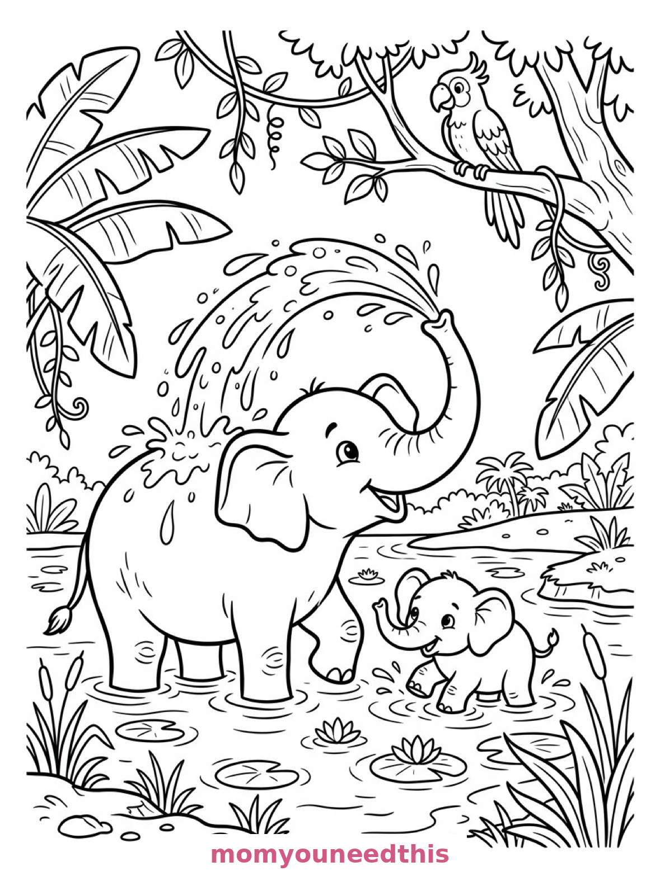
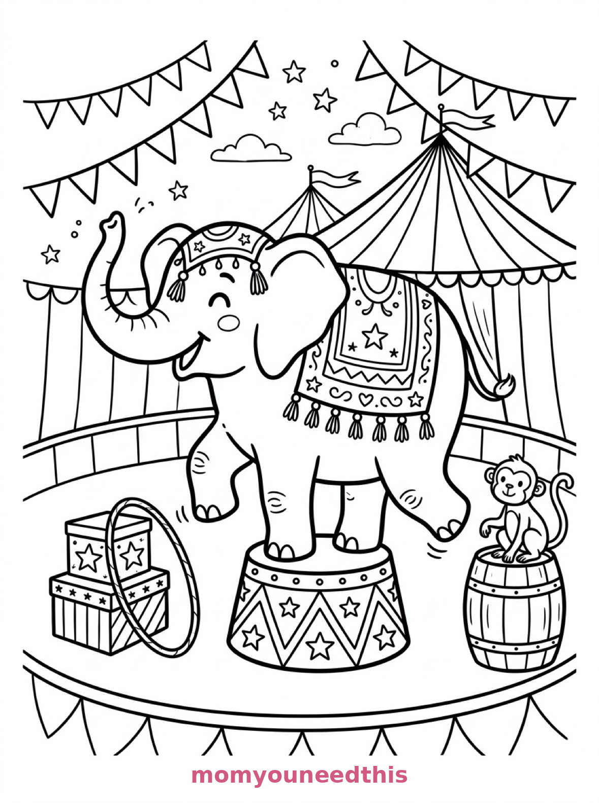
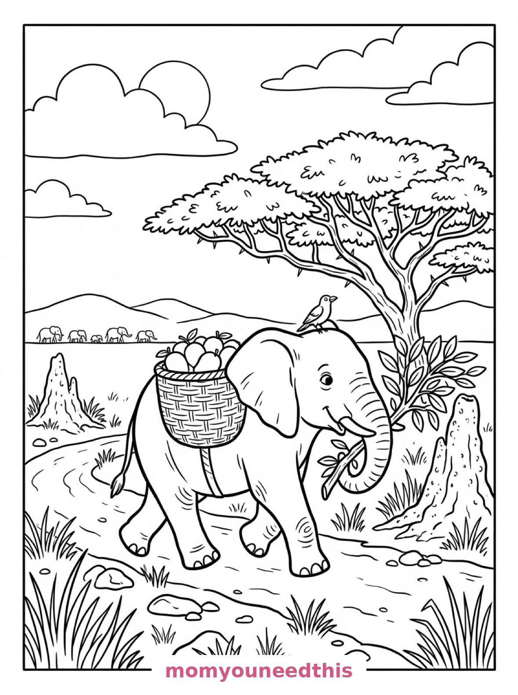

Free Elephant Coloring Pages Watering Hole, Circus & Savanna Walk Printables
These free elephant coloring pages rumble from a jungle watering hole to a circus ring to a savanna path — an elephant showering itself, a circus elephant balancing on a drum, and an elephant carrying a basket of mangoes. Download the set below, print at home on letter-size paper, and let the coloring fun begin. No signup needed.
Last updated: October 23, 2026
Quick Answer
Yes — this page has three free printable elephant coloring pages: a large elephant spraying water over its back with a baby elephant beside it, a circus elephant balancing one foot on a decorated drum, and an elephant walking a savanna path carrying a woven basket of mangoes. Bold outlines and big spaces, made for little hands. Download, print on letter-size paper, and hand over the crayons — no signup, no cost.
At a Glance
- Ages: 3–8
- Pages: 3 free printables
- Format: Print at home, letter size
- Cost: Free, no signup
- Supplies: Crayons or markers
- Time: 10–20 minutes
🐘 Elephant Shower at the Watering Hole Coloring Page

🎨 Download Your Free Watering Hole Coloring Page
A large elephant sprays an arc of water from its raised trunk over its own back at a jungle watering hole, a baby elephant standing in the shallows beside it, banana leaves and vines framing the scene and a parrot perched overhead — bold outlines, big spaces, zero signup.
⬇️ Download Free Watering Hole Page 🖨️ Print Watering Hole Page🎁 Free printable for preschoolers & kids
🎪 Circus Elephant on the Drum Coloring Page

🎨 Download Your Free Circus Elephant Coloring Page
An elephant in a circus ring balances one front foot on a decorated drum, wearing a fringed ceremonial blanket, with bunting and a striped big-top tent behind it, a hoop by a stack of painted boxes and a small monkey on a barrel — bold outlines, big spaces, zero signup.
⬇️ Download Free Circus Elephant Page 🖨️ Print Circus Elephant Page🎁 Free printable for preschoolers & kids
🥭 Elephant with a Mango Basket Coloring Page

🎨 Download Your Free Savanna Elephant Coloring Page
An elephant walks in profile along a savanna path carrying a woven basket of mangoes on its back, its trunk curled around a leafy branch, an oxpecker bird riding on its head, acacia trees and termite mounds along the path and distant elephants against the hills — bold outlines, big spaces, zero signup.
⬇️ Download Free Savanna Elephant Page 🖨️ Print Savanna Elephant Page🎁 Free printable for preschoolers & kids
More Coloring Pages
Tap any picture to open its theme page and download the free printable.


🐘 How To Use This Page
- Browse the three designs and pick the elephant your child will love most.
- Tap download or print under that design — the file opens full-size, ready for letter-size paper.
- Print a couple of copies of the circus elephant — that blanket wants two different color schemes.
- Color together with crayons or markers and trumpet politely.
🌴 Why Kids Love Elephant Coloring Pages
Elephants are the biggest land animals a child will ever color, and that size is satisfying: one enormous, friendly shape with ears like fans and a trunk that does everything. These pages show the trunk at work — showering, balancing acts nearby, carrying a branch — while the elephant handles a basket of mangoes on its back.
The three scenes span a whole elephant day: bath time at the watering hole, show time at the circus, and the walk home along the savanna. Each one is a full landscape, so the coloring lasts.
🐘 Meet the Three Elephant Scenes on This Page
The watering hole shower. A large elephant spraying an arc of water from its raised trunk over its own back at a jungle watering hole, a baby elephant standing in the shallows beside it, broad banana leaves and hanging vines framing the scene, a parrot perched on a branch overhead, and ripples and lily pads spreading across the water. It is the happiest page in the set — bath time, elephant style.
The circus elephant. An elephant in a circus ring balancing one front foot on a decorated drum, wearing a fringed ceremonial blanket across its back, strings of bunting and a striped big-top tent behind it, a hoop resting against a stack of painted boxes, and a small monkey sitting on a barrel at the edge of the ring. It is the showiest page in the set — the blanket and the drum are pattern playgrounds.
The savanna walk. An elephant walking in profile along a savanna path carrying a woven basket of mangoes balanced on its back with its trunk curled around a leafy branch, an oxpecker bird riding on its head, acacia trees and termite mounds along the path, and a line of distant elephants silhouetted against rolling hills. It is the most peaceful page in the set — a whole herd's day in one walk.
✏️ Elephant Coloring Tips
- Gray is grand, but not required. Real elephants are gray; coloring-page elephants have been blue, pink and purple for generations. Both traditions are honored here.
- Make the water arc sparkle. Light blue droplets over a gray elephant read as a shower instantly.
- Pattern the circus blanket. The fringed blanket and the decorated drum are the detail spots — alternating colors along the fringe is deeply satisfying.
- Spot the tiny riders. A parrot, a monkey and an oxpecker hide across the three pages — the small birds and beasts are the finishing touch on each scene.
🐘 Coloring Pages for Different Ages
For ages 3 to 4, start with the watering hole. Two big elephants and one big arc of water are all a little colorer needs, and the baby elephant is irresistible.
For ages 5 to 6, the circus elephant is the sweet spot. The elephant is one bold shape, and the drum, the bunting and the tent add a show to build around it.
For ages 7 to 8, hand over the savanna walk. The basket weave, the termite mounds, the distant herd and the rolling hills reward careful, detailed coloring.
🌴 More Elephant Fun After Coloring
Trunk math: the watering hole page has one big elephant shower and one baby in the shallows — how many legs are standing in water? How many lily pads? The biggest animal makes the best counting page.
For the rest of the safari, visit the animal coloring pages — and keep walking the savanna with the giraffe coloring pages, acacia trees included on both.
🔗 More Free Printables You’ll Love
- Free Animal Coloring Pages Free printable animal coloring pages for little learners.
- Free Giraffe Coloring Pages A savanna pair, a snowy zoo and a sunset drink to color.
- Free Tiger Coloring Pages A waterfall rest, a pouncing cub and a dusk drink to color.
- All Free Coloring Pages Browse every free coloring page on the site, organized by theme.
❓ Elephant Coloring Pages FAQ
Are these elephant coloring pages really free?
Yes — all three designs on this page are free original printables from MomYouNeedThis. Download them, print them at home, and color — no signup and no cost.
What ages are these coloring pages best for?
Kids ages 3 to 8 get the most from this set. The watering hole is the gentlest start for younger children, while the circus and savanna scenes have the detail older kids enjoy.
How do I print a coloring page?
Tap the download button under the design you want, then print the file on regular letter-size paper. The print button opens the full-size page in a new tab if you prefer to print from there.
Is there a baby elephant coloring page in this set?
Yes — the first design shows a baby elephant standing in the shallows beside the large elephant at a jungle watering hole, with a parrot watching from a branch overhead.
Can I make an elephant coloring book from these pages?
Yes — print all three designs, stack them in order, and staple along the left edge. Add a cover sheet with your child's name for a finished homemade elephant coloring book.